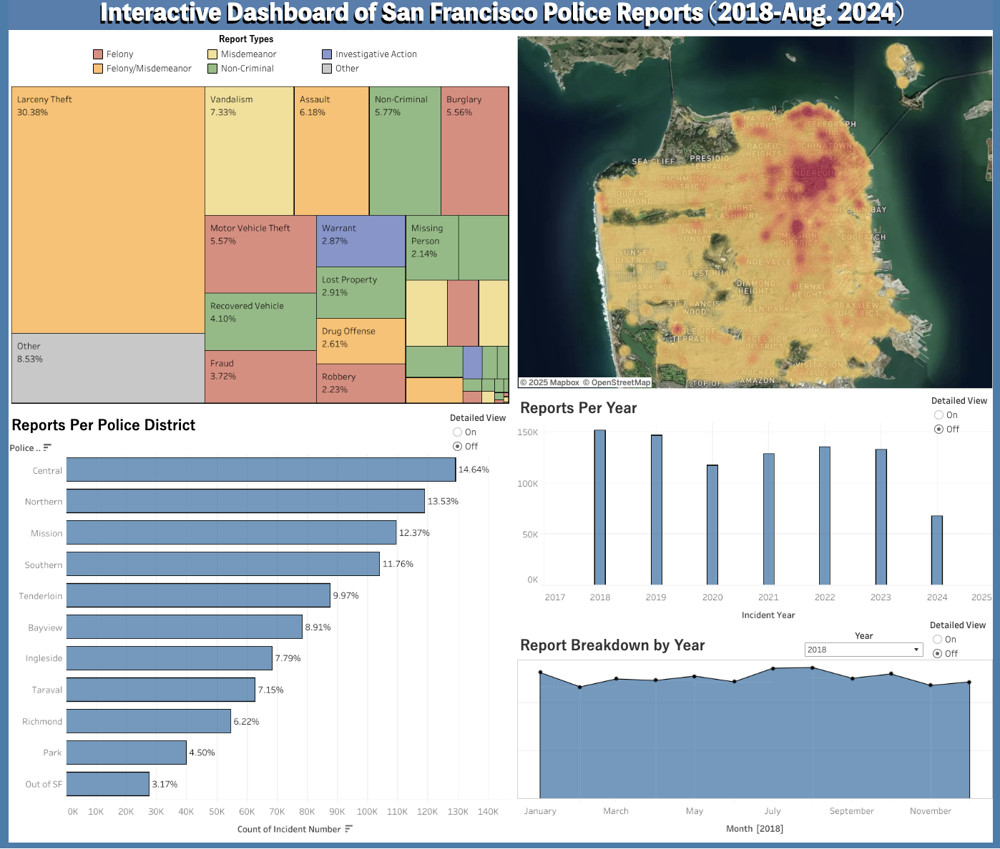
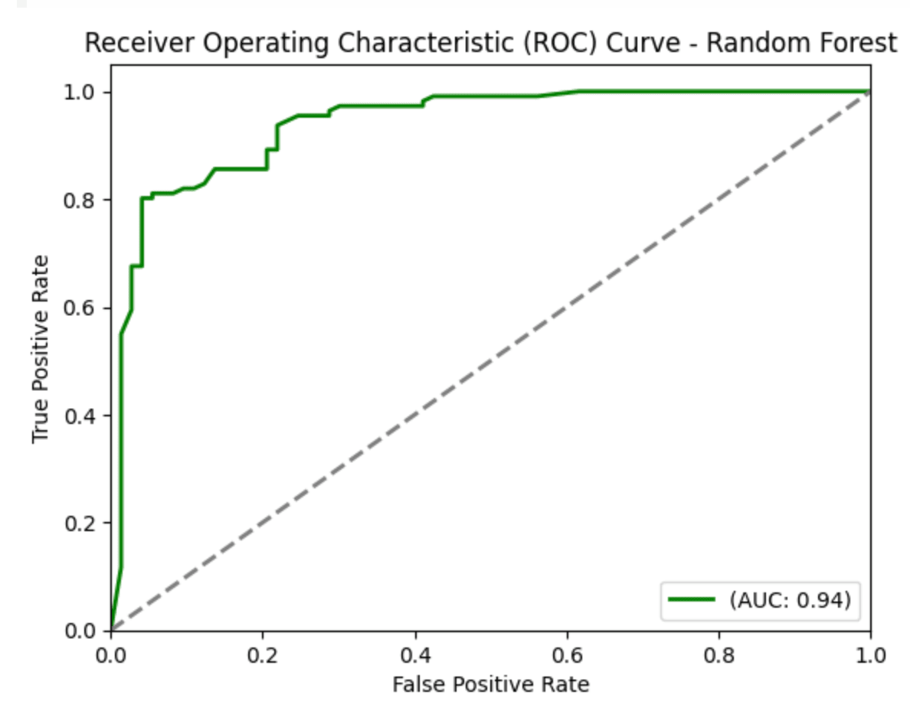

Projects
Predicting Credit Card Default with Neural Networks
In this project, I utilized PyTorch to construct a neural network which predicts credit card default among clients. Using various statistical techniques, model performance was improved by 140%. The final model achieved a prediction accuracy of 78% and performed well according to other evaluation metrics such as ROC-AUC and precision/recall.
The full project including code and visualizations can be found in the GitHub repository below.


2022 Diamond Price Analysis
For the following project, I implemented an in-depth regression analysis to examine what factors had an effect on diamond prices in 2022. I conducted feature selection, polynomial transformation and identification of unusual observations to obtain the final model. We ultimately found that carat, clarity and color had statistically significant effects on 2022 diamond prices.
The project report can be found below, or at this link.
Interactive Dashboard of San Francisco Police Reports
This project utilized data from the city/county of San Francisco to create an interactive dashboard visualizing police reports from January 2018 to August 2024. Over 800,000 observations of data were cleaned in Python in order to provide a comprehensive breakdown of the data. You can interact with the dashboard by clicking the button below!

Simulation Study of ANOVA
In this study, I analyzed the performance of the ANOVA test (F-test) under various conditions. Millions of simulations were run to identify situations where the ANOVA test performed well, and other situations where a permutation test may be better used.
The full project report can be found below, and the GitHub repository containing both the report and simulations can be accessed at this link.
Predictive Modeling of Heart Disease
In my introductory machine learning project, I implemented Random Forest and Logistic Regression models to predict heart disease among patients. This was my first dive into machine learning and sparked my interest in the field. I learned how to choose a model, conduct EDA, and evaluate models.


